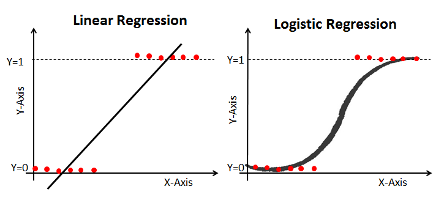

Chapter 7 Logistic setting
Just before we get on with Logistic Mixed Effect Model, lets us have a quick reminder about the fundamental differences between linear model and logistic model. We will use the board for this one.

We can begin by first running through a very quick illustration of a simple logistic model before getting into mixed effects. We will use quite a generic example - Titanic Survival Dataset. We will walk you through the main stages: model setup, model interpretation and finally, model evaluation.
Lets again recall and compare the simple model specification.
Linear model set up: \[\begin{equation} Y_[i] = \beta_0 + \beta_1 * X_i + \epsilon_i \end{equation}\]
Logistic model set up:
\[\begin{equation} log(\frac{P}{1-P})=\beta_0 +\beta_1 X_1 + \beta_2 X_2 + ... + \beta_k X_k \end{equation}\]
Hopefully you can note that \(\frac{P}{1-P}\) would be the formula for the odds.
We cant really work directly with log(odds) - however we can get to odds via log-inverse:
\[\begin{equation} \frac{P}{1-P}= \epsilon^(\beta_0 +\beta_1 X_1 + \beta_2 X_2 + ... + \beta_k X_k) \end{equation}\]
To get to actual P: \[\begin{equation} Pr(Y=1|X_1, X_2, ... X_k) = F(\beta_0 +\beta_1 X_1 + \beta_2 X_2 + ... + \beta_k X_k) \end{equation}\]
\[\begin{equation} Pr(Y=1|X_1, X_2, ... X_k) = \frac{1}{1+\epsilon^-(\beta_0 +\beta_1 X_1 + \beta_2 X_2 + ... + \beta_k X_k)} \end{equation}\] Note the difference in the writing and where our betas are allocated. This explain why we cannot simply use betas to comment on the size of the effects. What we may do instead is to take the log of the equation above.
7.1 Simple Example
We can illustrate a very simple set of logistic model analysis using an example of titanic data.
#Read data in
titanic<-read.csv('titanic.csv')#Lets check whats inside
str(titanic)## 'data.frame': 891 obs. of 13 variables:
## $ X : int 1 2 3 4 5 6 7 8 9 10 ...
## $ PassengerId: int 1 2 3 4 5 6 7 8 9 10 ...
## $ Survived : int 0 1 1 1 0 0 0 0 1 1 ...
## $ Pclass : int 3 1 3 1 3 3 1 3 3 2 ...
## $ Name : Factor w/ 891 levels "Abbing, Mr. Anthony",..: 109 191 358 277 16 559 520 629 417 581 ...
## $ Sex : Factor w/ 2 levels "female","male": 2 1 1 1 2 2 2 2 1 1 ...
## $ Age : int 22 38 26 35 35 NA 54 2 27 14 ...
## $ SibSp : int 1 1 0 1 0 0 0 3 0 1 ...
## $ Parch : int 0 0 0 0 0 0 0 1 2 0 ...
## $ Ticket : Factor w/ 681 levels "110152","110413",..: 524 597 670 50 473 276 86 396 345 133 ...
## $ Fare : num 7.25 71.28 7.92 53.1 8.05 ...
## $ Cabin : Factor w/ 148 levels "","A10","A14",..: 1 83 1 57 1 1 131 1 1 1 ...
## $ Embarked : Factor w/ 4 levels "","C","Q","S": 4 2 4 4 4 3 4 4 4 2 ...Lets quickly factorise the outcome (Survived) and few of our explanatory variables (i.e. Pclass)
titanic$Survived<-as.factor(titanic$Survived)
titanic$Pclass<-as.factor(titanic$Pclass)
titanic$Sex<-as.factor(titanic$Sex)Lets also make sure that there are no NAs
#Clean
titanic<-na.omit(titanic)When it comes to model set up we need a few modifications to our lm() structure, namely we need to specify the distribution family.
#Logit model
logit_titanic<-glm(Survived~ Pclass + Sex + Age, data=titanic, family='binomial' )#Lets explore the results
summary(logit_titanic)##
## Call:
## glm(formula = Survived ~ Pclass + Sex + Age, family = "binomial",
## data = titanic)
##
## Deviance Residuals:
## Min 1Q Median 3Q Max
## -2.7299 -0.6779 -0.3953 0.6483 2.4655
##
## Coefficients:
## Estimate Std. Error z value Pr(>|z|)
## (Intercept) 3.775690 0.401178 9.412 < 2e-16 ***
## Pclass2 -1.309659 0.278072 -4.710 2.48e-06 ***
## Pclass3 -2.580495 0.281493 -9.167 < 2e-16 ***
## Sexmale -2.522727 0.207379 -12.165 < 2e-16 ***
## Age -0.036949 0.007658 -4.825 1.40e-06 ***
## ---
## Signif. codes: 0 '***' 0.001 '**' 0.01 '*' 0.05 '.' 0.1 ' ' 1
##
## (Dispersion parameter for binomial family taken to be 1)
##
## Null deviance: 964.52 on 713 degrees of freedom
## Residual deviance: 647.35 on 709 degrees of freedom
## AIC: 657.35
##
## Number of Fisher Scoring iterations: 5Have a look as the output. Most of the things are familiar here (i.e. p values) but you will note that there is no R squared and in truth we should not be commenting on coefficients size here. We can report signs (there seem to be negative effect on survival from being in second or third class versus the first). We may also note negative relationship between age and survival, meaning that younger passengers were prioritised.
In logistic setting the output you are seeing above is in log-odds. We can calculate the effects in terms of odds by taking log-inverse (exponential).
#Take exp() of the coeficients
exp(logit_titanic$coefficients)## (Intercept) Pclass2 Pclass3 Sexmale Age
## 43.62758784 0.26991200 0.07573651 0.08024047 0.96372495These are now more comparable. For instance, we can say that in terms of odds change the effect of being in Class 3 on survival appear to be the strongest.
There is an extra something we can do here. You may have noticed that there is no R-squared, but there are alternative measures to check the model fit. We can check how well our model predict survival. To do that, we can obtain predicted (fitted) values from the model and compare those to observed.
#Obtain predictions
titanic$predicted<-predict(logit_titanic, type='response') # by specifying 'response' we then will get values between 0/1Check what you have stored in the predictions:
summary(titanic$predicted)## Min. 1st Qu. Median Mean 3rd Qu. Max.
## 0.01693 0.10876 0.31892 0.40616 0.67023 0.97592We may want to assign values of 0/1 to make the results comparable to the observed data.
titanic$predicted <- ifelse(titanic$predicted > 0.5, yes = 1, no = 0) # we can assign 1 to those greater than 0.5, 0 otherwiseAnd now we can check the predicted against observed:
#Create confusion matrix
confusion <- table(actual = titanic$Survived, expected.value = titanic$predicted)
confusion## expected.value
## actual 0 1
## 0 356 68
## 1 83 207#Correctly predicted
ratio_correct_pred<-(356+207)/(356+68+83+207) #sum the diagonal and divide by the total N
ratio_correct_pred## [1] 0.7885154Here we are: the model correctly predicted about 80 percent of cases. Please note that this is the value that arises due to our allocation of 0/1. You may choose a different threshold, depending on the weights you assign to predicting correctly on the outcomes.
7.1.1 Optional (Odds Refresher)
Odds can be read as the ratio of probability of success over probability of losing. \[\begin{equation} Odds = \frac{P(Success)}{1-P(Success)} \end{equation}\] Odds can take values from 0 to + ∞
Interpretation
Negative (0 to 1): probability of success is lower than that of losing
\[\begin{equation} Odds= \frac{P(Success=0.2)}{1-P(Success)}= \frac{0.2}{0.8}=0.25 \end{equation}\]Positive (1 to ∞): probability of success is greater than that of losing \[\begin{equation} Odds= \frac{P(Success=0.8)}{1-P(Success)}={0.8}{0.2}=4 \end{equation}\]
No effect (1): there is equal chances of losing/winning \[\begin{equation} Odds =\frac{P(Success=0.5)}{1-P(Success)}={0.5}{0.5}=1 \end{equation}\]
An example scenario: Consider the case where I told you that your odds of passing the stats course for our UG students \(\frac{0.5}{0.5}\) or 1 meaning that you have an absolutely equal chances to pass this course to start with. Now, I run a regression on the student success (pass/fail) and found that the exponential of coefficient for attendance is equal to (β_(Attendance ) )= 2.5.
Essentially, that would mean that now, if the student attended all ten weeks of the labs, their odds of success are multiplied by 2.5: \(\frac{0.5}{0.5}*2.5=2.5\) or the odds of passing the module are increasing by 150%.
You can also read an example based on logistic regression model here